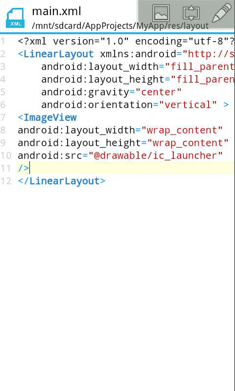
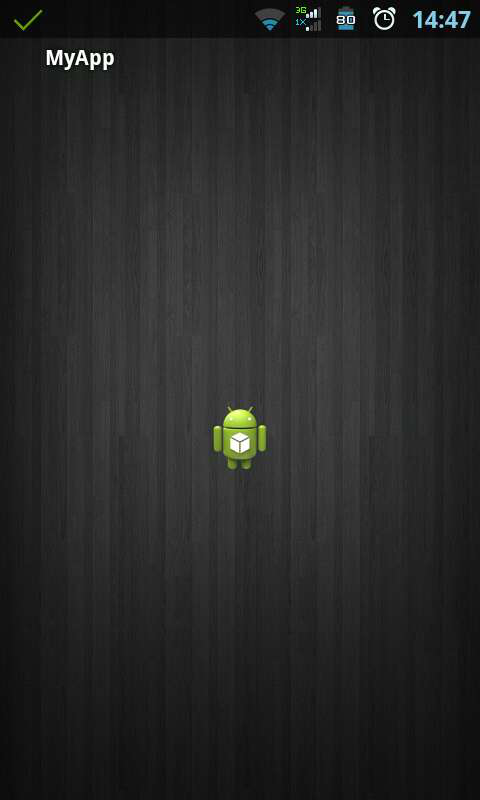

简单了解ImageView(12课)
大家知道，一个应用要想漂亮，就离不开图片。ImageView就是图片框的意思，我们用来显示我们的图片。
首先我们新建一个项目，如果还不知道怎样新建项目的请戳回去看以前的教程，我们打开我们的xml代码，已经默认帮我们写上了一个线性布局了，方向为垂直，控件居中，我们把默认的TextView给去掉，更换成ImageView，下面来看我们的代码。 前面两行是设置控件的宽，高为包含内容，这个相信大家都熟悉了吧。 android:src="@drawable/ic_launcher"在这里是设置图片框所显示的图片，@drawable是引用项目目录里面的一张图片，这里我们所使用的是默认的名为ic_launcher.png的图片。我们也可以自己放置图片到drawable目录里面去，如果不懂，请看前面所讲到的项目文件的组成。

然后我们运行我们的项目，看屏幕正中心是不是显示着我们的图标图片。其实这个要讲的内容也不多。

这里再向大家介绍一些ImageView的基本属性:
1：src：
设置要展示的图片
2：adjustViewBounds：
调整边框时是否保持可绘制对象的宽高比。需要与maxWidth、MaxHeight一起使用，否则单独使用没有效果。比如想设置图片固定大小，又想保持图片宽高比，需要如下设置：
1设置setAdjustViewBounds为true；
2）设置maxWidth、MaxHeight；
3）设layout_width和layout_height为wrap_content。
3：scaleType：设置图片的填充方式。有如下可取的值：
1）matrix ：用矩阵来绘图
2）fitXY：拉伸图片（不按比例）以填充View的宽高
3）fitStart：按比例拉伸图片，拉伸后图片的高度为View的高度，且显示在View的左边
4）fitCenter：按比例拉伸图片，拉伸后图片的高度为View的高度，且显示在View的中间
5）fitEnd：按比例拉伸图片，拉伸后图片的高度为View的高度，且显示在View的右边
6）center ：按原图大小显示图片，但图片宽高大于View的宽高时，截图图片中间部分显示
7）centerCrop：按比例放大原图直至等于某边View的宽高显示。
8）centerInside：当原图宽高或等于View的宽高时，按原图大小居中显示；反之将原图缩放至View的宽高居中显示
在布局中所能完成的事我们同样可以在代码中完成，这节的一个小作业，让大家在代码中设置显示一张图片。首先我们要添加一个id，然后声明一个ImageView的对象，然后还记得我们前面所讲过的findViewById方法获取组件对象吗？然后通过对象的setImageResource(R.drawable.ic_launcher)方法来显示一张图片。其中R.drawable.ic_launcher代表的是图片id。